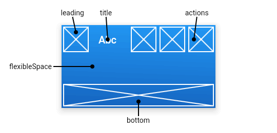
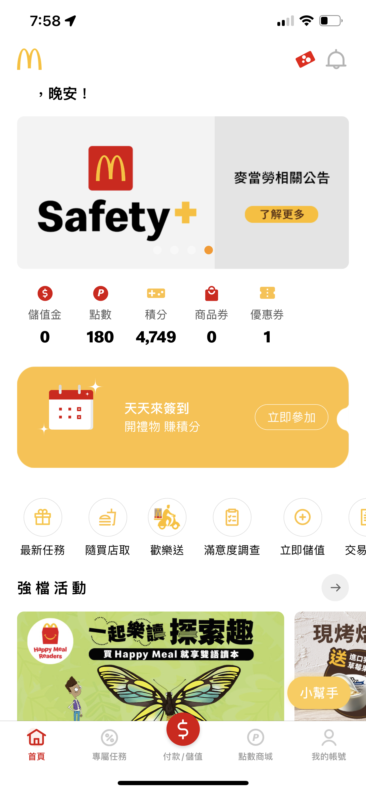
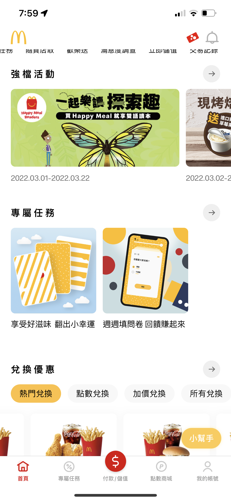
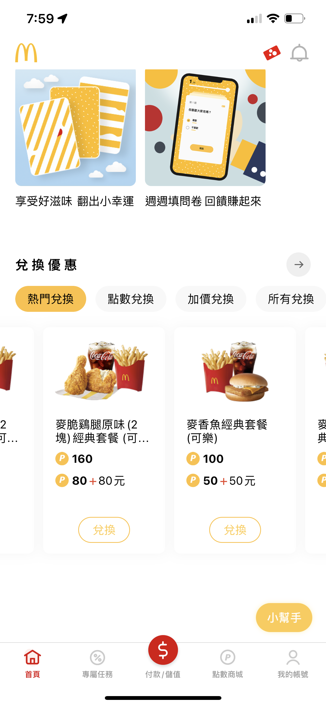

本單元將介紹基本widgets包含MaterialApp、Scaffold、Container、Row、Column、Image、Text、Icon等。Widget介紹由MaterialApp開始，之後為MaterialApp預設Scaffold(鷹架)版面，Scaffold widget為Android material design最常用的頁面設計包含appBar、BottomappBar、Drawer或BottomSheet等，藉由Scaffold widget，設計者能快速的建立頁面。
接著利用Scaffold widget中 body 屬性來介紹基本常用屬性widgets包含Text(文字)widget–用於顯示文字字串。Icon(圖示)widget–用於顯示圖示。Image(圖片)widget–用於顯示圖片。
最後將搭配版面配置widgets包含Container(容器)widget–用於放置內容的方塊，類似網頁設計的div方塊，可設定大小、前景、背景及內距等。Row(列)widget–用於包含橫向內容。Column(欄)widget–用於包含縱向內容。appBar widget用於設定頁面上方App控制列。PlaceHolder(預留位置)–用於設定即將顯示內容的區域。
Material Widget用於包含不同widgets來呈現Goolge Material設計效果，以下僅介紹MaterialApp常用屬性及屬性對應資料類型，後續課程將針對不同應用代入個別屬性說明。
MaterialApp(
{Key? key,
Widget? home,
String title = '',
Color? color,
ThemeData? theme,
Locale? locale,
bool debugShowCheckedModeBanner = true,
)
MaterialApp(
title: 'Flutter Demo',
theme: ThemeData(
primarySwatch: Colors.blue,
),
home: const MyHomePage(title: 'Flutter Demo Home Page'),
);
MaterialApp(
title: 'Flutter Demo',
color:Colors.amber,
theme: ThemeData(
primarySwatch: Colors.blue,
),
home: const MyHomePage(title: 'Flutter Demo Home Page'),
);
練習：請改變預設程式主要調色盤顏色、並嘗試設定單色與深色場景。
Scaffold Widget為Android material design最常用頁面widget並涵蓋不同版面設計如appBar、BottomappBar、Drawer或BottomSheet等widgets版面，Scafold widget讓設計者能快速地進行頁面設計。Scaffold widget屬性如下，置於大括符中屬性並不是都必須設定，接下來我們將對基礎屬性進行說明。
Scaffold({Key key,
PreferredSizeWidget appBar,
Widget body,
Widget floatingActionButton,
FloatingActionButtonLocation floatingActionButtonLocation,
FloatingActionButtonAnimator floatingActionButtonAnimator,
List persistentFooterButtons,
Widget drawer,
Widget endDrawer,
Widget bottomNavigationBar,
Widget bottomSheet,
Color backgroundColor,
bool resizeToAvoidBottomPadding: true,
bool primary: true })
Scaffold(
body: Text('您好嗎'),
);
AppBar置於APP的最上方，一般用於設定標題列(title)、動作按鈕(actions)與跳頁選單(Tabs)，AppBar widget基本包含三個區塊如下位置示意圖。

AppBar({Key key,
Widget leading,
bool automaticallyImplyLeading: true,
Widget title,
List actions,
Widget flexibleSpace,
PreferredSizeWidget bottom,
double elevation: 4.0,
Color backgroundColor,
Brightness brightness,
IconThemeData iconTheme,
TextTheme textTheme,
bool primary: true,
bool centerTitle,
double titleSpacing: NavigationToolbar.kMiddleSpacing,
double toolbarOpacity: 1.0,
double bottomOpacity: 1.0 })
練習：以麥當勞字型為例，請在project中建立assets/fonts檔案夾，並將mclawsui.ttf字型放在fonts檔案夾後，請修改設定檔pubspec.yaml，設定字型名稱為MClawsui並設定字型檔位置後，請在AppBar widget中leading屬性設定麥當勞Logo- m (顏色amber、大小40)
Text widget用於顯示文字。Text widgets包含Text與Text.rich widgets，Text widget的文字套用相同文字樣式，而Text.rich widget可對文字設定不同樣式。請注意設定文字可包含特殊符號如\n(強迫跳行)、\t(跳格)等，接下來我們將對基礎屬性進行說明。
Text(String data,
{ Key key,
TextStyle style,
TextAlign textAlign,
TextDirection textDirection,
Locale locale,
bool softWrap,
TextOverflow overflow,
double textScaleFactor,
int maxLines,
String semanticsLabel })
TextStyle({bool inherit: true,
Color color,
double fontSize,
FontWeight fontWeight,
FontStyle fontStyle,
double letterSpacing,
double wordSpacing,
TextBaseline textBaseline,
double height,
Locale locale,
Paint foreground,
Paint background,
TextDecoration decoration,
Color decorationColor,
TextDecorationStyle decorationStyle,
String debugLabel,
String fontFamily,
String package })
練習：請使用Colors與Color類別練習不同顏色與透明度設定。
Text widget使用相同的樣式套用於整段文字，當設計者希望將不同的樣式套用於一段文字，則需使用Text.rich widget，Text.rich widget使用TextSpan widget來包含多段不同樣式的文字，TextSpan widget又可包含多個TextSpan widgets，而每個TextSpan均可設定樣式。
Text.rich(TextSpan textSpan,
{ Key key,
TextStyle style,
TextAlign textAlign,
TextDirection textDirection,
Locale locale,
bool softWrap,
TextOverflow overflow,
double textScaleFactor,
int maxLines,
String semanticsLabel })
TextSpan({TextStyle style,
String text,
List children,
GestureRecognizer recognizer })
Icon widget用於顯示icon(圖示)，接下來我們將對基礎屬性進行說明。
Icon(IconData icon,
{ Key key,
double size,
Color color,
String semanticLabel,
TextDirection textDirection })
練習：請設定不同大小、顏色 Home圖示
Image widget用於設定顯示圖片，圖片來源包含本地端資源(asset)、檔案(file)、記憶體(memory)與網路(network)，本單元僅說明如何顯示本地端資源與網路圖片，檔案與記憶體圖片會在後續課程說明。
所謂本地端資源是指將顯示圖片放置於APP project中，因此顯示本地端圖片資源，必先設定本地端圖片來源位置，首先在project的根目錄新增圖片擺放目錄(假設圖片將置於assets/images目錄中，則在project根目錄新增assets資料夾，之後在assets資料夾中再新增images資料夾來放置本地端圖片檔)，最後project需在pubspec.yaml中設定本地端資源位置如下圖。Image.asset widget會根據設備的device pixel ratio(設備像素比例)自動選取對應比例圖片，使用者可在資源目錄(如assets/images)下新增2.0x或3.0x目錄，目錄名稱2.0x或3.0x代表設備的設備像素比例，例如Samsung s9設備像素比例為4，之後再將對應該解析度並具相同檔名的圖檔放在對應目錄中，則Image.asset widget會根據顯示設備的DPR來選擇對應的檔案。接下來我們將對基礎屬性進行說明。Image.network從網路讀取圖片，只需將圖片位址代入即可。
Image.asset(String name,
{ Key key,
AssetBundle bundle,
String semanticLabel,
bool excludeFromSemantics: false,
double scale,
double width,
double height,
Color color,
BlendMode colorBlendMode,
BoxFit fit,
AlignmentGeometry alignment: Alignment.center,
ImageRepeat repeat: ImageRepeat.noRepeat,
Rect centerSlice,
bool matchTextDirection: false,
bool gaplessPlayback: false,
String package })
練習：請使用網路圖片Image.network，設定圖片大小為 100 x 100，並搭配下一個 Container widget(大小設為 200 x 200)，練習不同填滿效果。
練習：請使用網路圖片Image.network，設定圖片大小為 100 x 100，並搭配下一個 Container widget(大小設為 200 x 200)，練習不同擺放設定FractionalOffset與Alignment的效果。
Container widget用於設定一個區塊，widget屬性如屬性名稱:屬性值。例如設定Container寬為200，設定值為width:200.0，因為寬的資料類型為double，因此必須使用200.0。
Container({Key key,
AlignmentGeometry alignment,
EdgeInsetsGeometry padding,
Color color,
Decoration decoration,
Decoration foregroundDecoration,
double width,
double height,
BoxConstraints constraints,
EdgeInsetsGeometry margin,
Matrix4 transform,
Widget child })
請在Container widget中顯示文字「南臺科技大學」，並練習不同內距設定。
BoxDecoration({Color? color,
DecorationImage? image,
BoxBorder? border,
BorderRadiusGeometry? borderRadius
})
練習：請設定 200 x 200 Container widget背景圖。
ElevatedButton widget用於設定平面昇起按鈕，使用者可以透過按鈕執行想要動作。
IconButton({Key? key,
double? iconSize,
VisualDensity? visualDensity,
EdgeInsetsGeometry padding = const EdgeInsets.all(8.0),
AlignmentGeometry alignment = Alignment.center,
double? splashRadius,
Color? color,
Color? focusColor,
Color? hoverColor,
Color? highlightColor,
Color? splashColor,
Color? disabledColor,
required VoidCallback? onPressed,
MouseCursor? mouseCursor,
FocusNode? focusNode,
bool autofocus = false,
String? tooltip,
bool enableFeedback = true,
BoxConstraints? constraints,
required Widget icon})
練習：請在AppBar中actions屬性設定圖示按鈕(圖示為alert)，圖示大小30、同時設highlightColor與splashColor為透明。
ElevatedButton widget用於設定平面昇起按鈕，使用者可以透過按鈕執行想要動作。
ElevatedButton({Key? key,
required VoidCallback? onPressed,
VoidCallback? onLongPress,
ValueChanged<bool>? onHover,
ValueChanged<bool>? onFocusChange,
ButtonStyle? style,
FocusNode? focusNode,
bool autofocus = false,
Clip clipBehavior = Clip.none,
required Widget? child})
ElevatedButton(
onPressed: () {},
child: const Text('點選'),
)
ElevatedButton(
onPressed: null,
child: const Text('無作用'),
)
Row(列)、Column(欄) widget為版面設定Widgets，用於以橫向或縱向擺放多個widgets，列與欄最多占整個頁面，如果內容超過頁面，會造成溢位情況，這時就必須搭配捲動版面。
Row({Key key, MainAxisAlignment mainAxisAlignment: MainAxisAlignment.start,
MainAxisSize mainAxisSize: MainAxisSize.max,
CrossAxisAlignment crossAxisAlignment: CrossAxisAlignment.center,
TextDirection textDirection,
VerticalDirection verticalDirection: VerticalDirection.down,
TextBaseline textBaseline,
List children: const [] })
Column({Key key, MainAxisAlignment mainAxisAlignment: MainAxisAlignment.start,
MainAxisSize mainAxisSize: MainAxisSize.max,
CrossAxisAlignment crossAxisAlignment: CrossAxisAlignment.center,
TextDirection textDirection,
VerticalDirection verticalDirection: VerticalDirection.down,
TextBaseline textBaseline,
List children: const [] })
Expanded(擴展)會用於Row(列)、Column(欄) widget，其目的是希望能彈性處理版面的空間。
Expanded({Key? key,
int flex = 1,
required Widget child})
SingleChildScrollView widget用於捲動單一內容。
SingleChildScrollView(
{Key? key,
Axis scrollDirection = Axis.vertical,
bool reverse = false,
EdgeInsetsGeometry? padding,
bool? primary,
ScrollPhysics? physics,
ScrollController? controller,
Widget? child,
DragStartBehavior dragStartBehavior = DragStartBehavior.start,
Clip clipBehavior = Clip.hardEdge,
String? restorationId,
ScrollViewKeyboardDismissBehavior keyboardDismissBehavior = ScrollViewKeyboardDismissBehavior.manual}
)
  
版面設計：麥當勞APP首頁版面(由上而下排列):